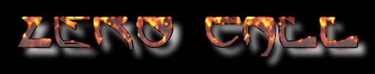

Hacked By:
and -=|§tee£_edge|=- Sp1d3r [Attack] (Volte logo...) Murphy
Thanks: Ph4nt4 ßoner | THE ¤ Z€NNi€NSS| AcidSnack -|NeoByte|- †O®S†
Groups: Cr1m3 0rg4n1z4d0 Silver Lords Demonios Renegados Anjos Virtuais Prime Suspectz
Você Pra min é Problema Seu
>>S4t4n1c S0ulS<<